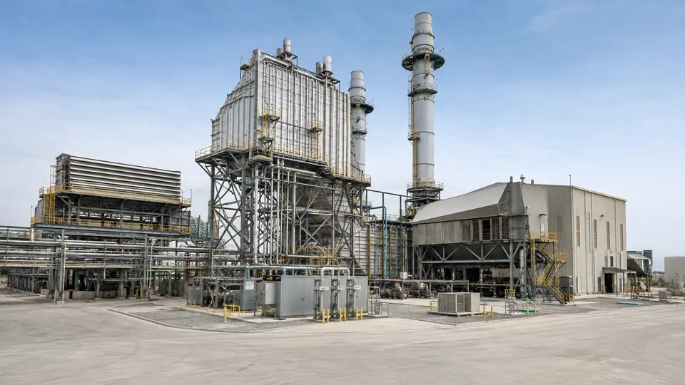
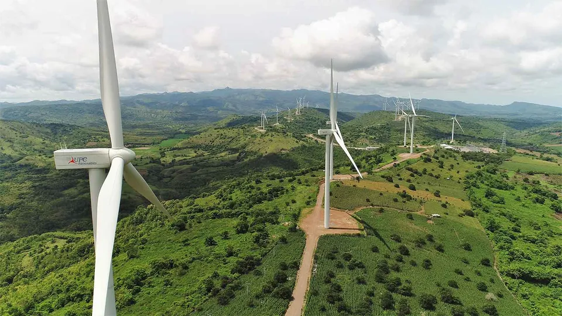
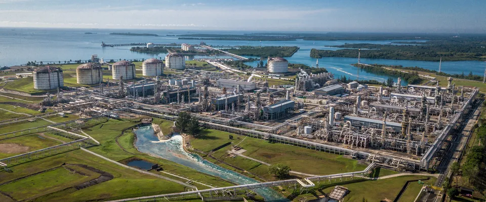
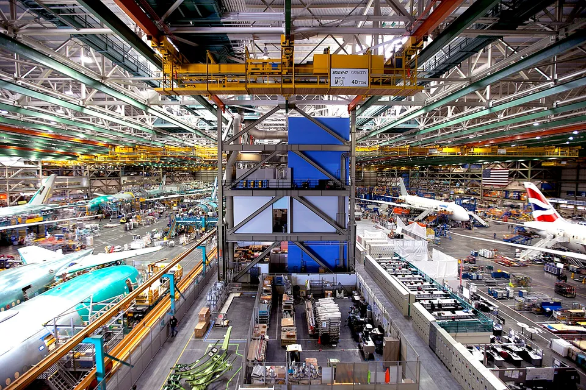
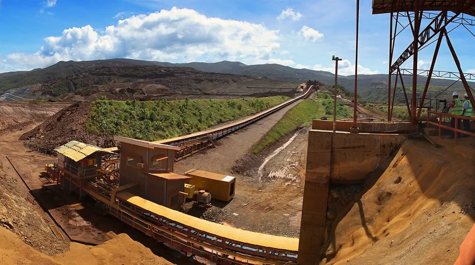
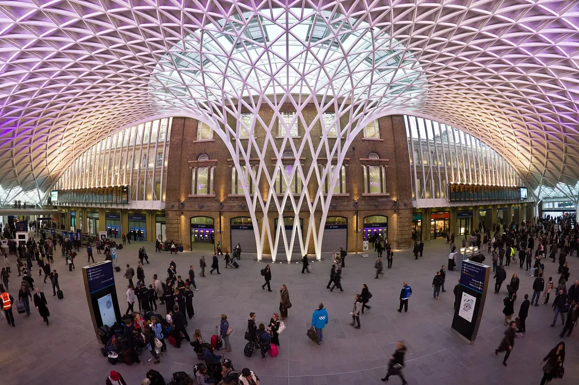
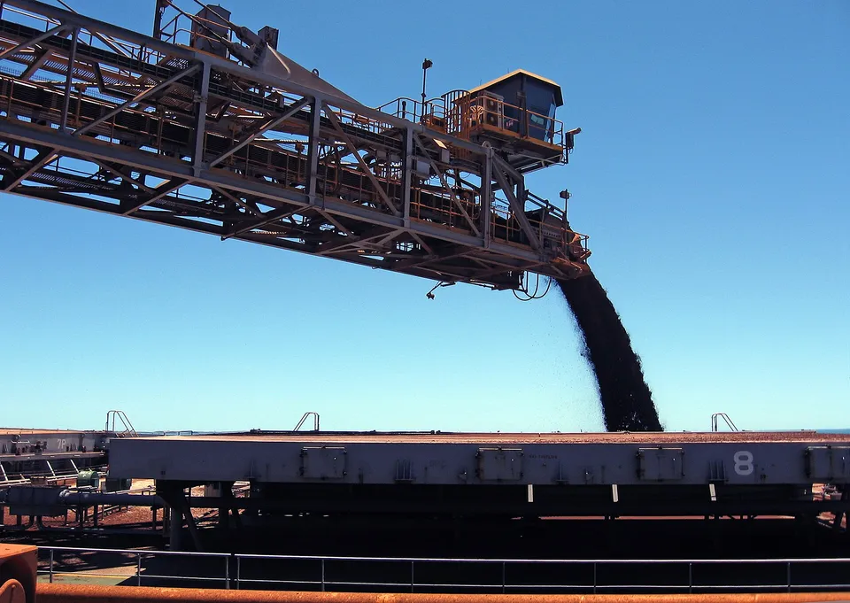

图片来源 / Image Credits
以下图片用于说明钢结构的应用领域，不代表本站承建、设计或拥有的项目，也不表示摄影者或项目方为本站背书。
These images illustrate industry sectors. They are not a portfolio of projects owned, designed or delivered by Steelstructure.ai, and do not imply endorsement.
照片仅进行尺寸缩放和 WebP 格式转换，页面根据屏幕比例裁切显示。署名及原始许可证见各图链接；CC BY-SA 图片的改编版本继续遵循相应的相同方式共享许可。
Photographs are resized and converted to WebP, with responsive display cropping. Attribution and original licenses are linked below. Adapted versions of CC BY-SA images remain under the corresponding share-alike license. Retrieved 2026-09-07.

发电及公用工程
Power Generation & Utilities
AI 生成项目示意图，并非真实项目照片。
AI-generated project concept, not a photograph of a real project.

可再生及低碳能源
Renewable & Low-Carbon Energy
USAID Indonesia · Wikimedia Commons 原图与署名 / Original & attribution
.jpg){kind=link}
Public domain

油气、LNG及化工
Oil, Gas, LNG & Chemicals
consigliere ivan (photo credited to PT Badak NGL) · Wikimedia Commons 原图与署名 / Original & attribution
{kind=link}

工业及流程制造
Industrial & Process Manufacturing
Jetstar Airways · Wikimedia Commons 原图与署名 / Original & attribution
.jpg){kind=link}

矿业、冶金及矿物加工
Mining, Metals & Minerals Processing
{kind=link}

{kind=link}

港口、海工及散货码头
Ports, Marine & Bulk Terminals
Chad Hargrave / CSIRO · Wikimedia Commons 原图与署名 / Original & attribution
{kind=link}
轮播控制图标 / Carousel icons: Lucide / Feather license notices.